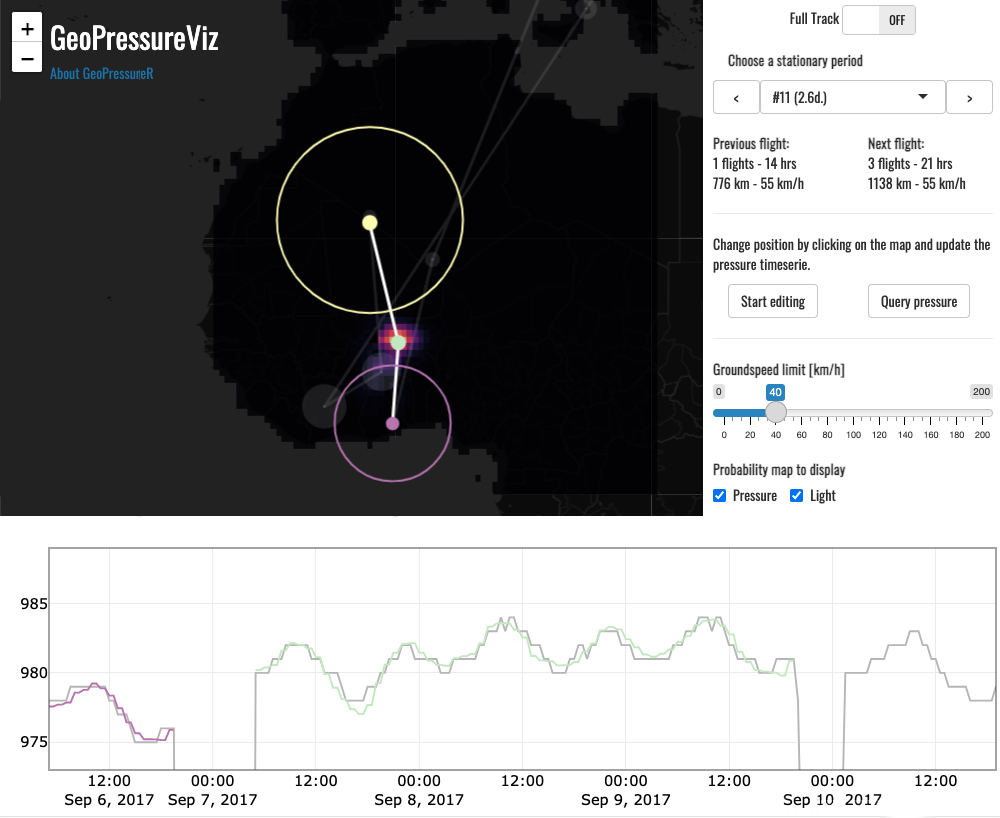

GeoPressureViz
GeoPressureR includes a Shiny app called GeoPressureViz which helps you visualize the overall trajectory of the bird as well as each step-by-step move. Note that this is a visualization tool only and as such, does not change/modify anything on your data. The main goal is to check any issue with the labeling of pressure and the secondary goal is to give you a more intuitive sense of how your bird is moving. This can be a useful platform to discuss the bird trajectory with your collaborators.
Screenshot of the GeoPressureViz demo showing the estimated position at one stationary period of the Great Reed Warbler 18LX, based on (1) the pressure and light match (map colorscale and timeserie) and (2) potential flight distances from previous and next stationary period (circles).
Navigate GeoPressureViz
Open the demo for 18LX
-
The viewer has three panels:
The maps showing your the trajectory of the bird. The size of the circles indicates the duration of the stopover (hover over them to get more info).
The bottom panel showing the pressure timeserie. The grey line is the raw day (pam$pressure), the black dots are pressure labeled as outlier, colored lines are the normalized pressure at the best match (i.e., static_timeserie$pressure0) and the color match the map dots.
The side panel provides key information and helps you navigates the app
A central parameter to play with carefully is the “Minimum duration”. This will filter the entire dataset and replot the map and figure to select only stopover of such duration or higher. Try changing this value once and wait a bit for the figure to update. As shorter stationary period are less certain, their position is often wrong. That’s ok for now.
Toggle the “Full Track” button to move to the stationary period view. The side panel will change and provides you with more options.
Change the stationary period with the drop down or previous/next button. Except from the first sta., three dots, two lines and two circle will appears on the map, and the pressure timeserie will update to zoom exactly on this stationary period. The color of the timeserie informs you on which dots on the map is the current stationary period, the two others begin the previous and next one.
The circles indicates the distance from and to the previous and last stationary period location based on the speed slider on the side panel (default if 40km/h). You can edit the speed to see how this impact the distances.
You can choose to display the probability map of pressure (pressure_prob) , light (light_prob) or combined (static_prob).
Because some location of the most likely path can be completely off (hence the need for a trajectory model), it might be helpful to change temporarily their location to check the coherence of distance with the next/previous stationary period. Use the button “Start Editing” to do that. Every time you will click on the map, it will update the position. Once you’re happy with the position, you can click again the button to disable the editing mode.
Finally, you can also check the pressure timeserie with the new position that you’ve edited with the button “Query pressure”. This runs geopressure_ts() on the background, so it will be slow (especially for long stationary period). This feature is quite unstable, so use carefully, and be aware that you might have to restart the app if it crashes (submit an issue with reproducible example).
Run GeoPressureViz
To run the visualization, use the geopressureviz() function. The minimum information needed is pam and static_prob, but to see the difference between light and pressure, you can also add light_prob and pressure_prob. To see the match of pressure timeserie in the bottom panel, add pressure_timeserie. The visualization will only display the stationary period present in static_prob.
path_modified <- geopressureviz(
pam = pam, # required
pressure_prob = pressure_prob, # optional
light_prob = light_prob, # optional
static_prob = static_prob, # required. You can use pressure_prob here.
static_prob_marginal = grl_marginal, # optional
pressure_timeserie = static_timeserie # optional. Could be either: pressure_timeserie, static_timeserie, shortest_path_timeserie
)
Note that if you close the app from the browser, it should return the path that you have interactively created as a data.frame.